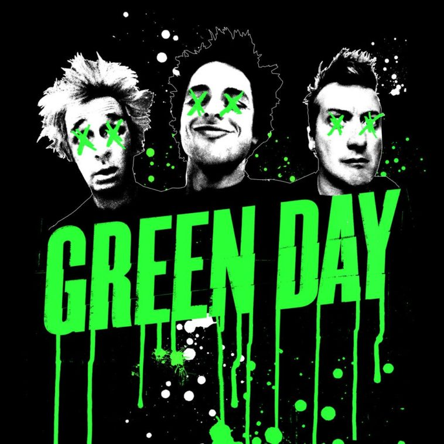
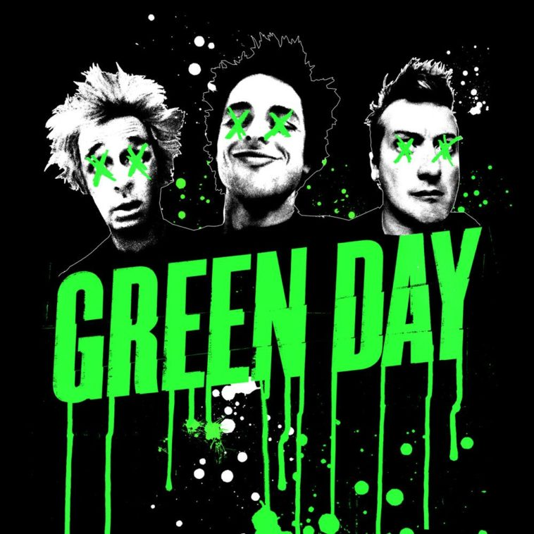

Hi, I'm Vivian Wu 👋
I'm a graduate student at UW specialized in the UX design.
I started my career as a digital marketing specialist and my deep-down passion led me to
product design.
User-centric👤 + Storytelling🎙️ + Strategic thinking📝 = Solutions for users

 Favorite animal Pomeranian
Favorite food Boba
Favorite TV show MasterCheif
Favorite animal Pomeranian
Favorite food Boba
Favorite TV show MasterCheif
 Favorite hobby Hiking
 Favorite band Greenday
Favorite hobby Hiking
 Favorite band Greenday